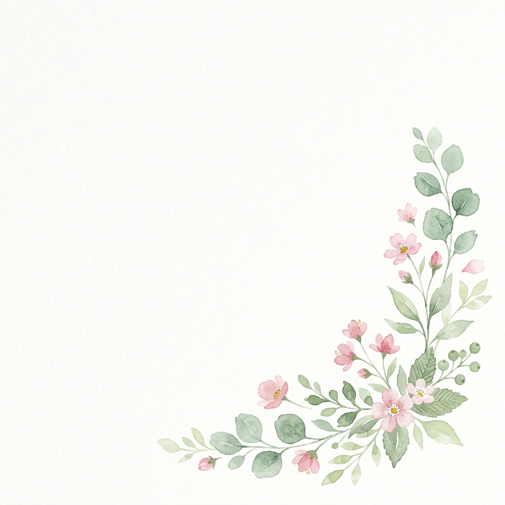
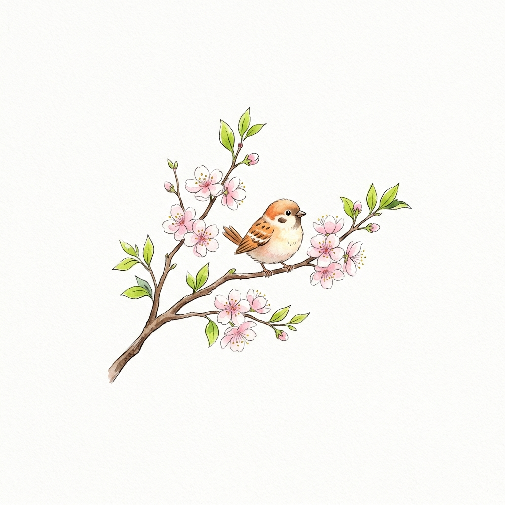

Polaris
별친구와 함께하는 AI 루틴 서비스
Spring Boot
MSA
Saga Pattern
2026.05 ~ 2026.06 · 백엔드 개발


신뢰할 수 있는 서비스를 만드는 백엔드 개발자
GIS 솔루션 기업에서 2년간 공공 시스템 재구축 프로젝트를 수행하며 서비스 개발과 운영을 경험했습니다.
실무를 통해 시스템의 가치는 정상 동작보다 장애 발생 이후의 대응 방식에서 결정된다고 생각하게 되었습니다. 이후 AI 기반 서비스 프로젝트에서는 운영 로그 모니터링을 통해 분산 트랜잭션 불일치를 일 평균 5건 확인한 뒤 Saga 패턴과 보상 트랜잭션을 적용하여 불일치 건수를 0건으로 개선했습니다.
기능 구현에 그치지 않고 장애 상황에서도 신뢰할 수 있는 서비스를 만드는 백엔드 개발자를 지향합니다.
개발자로서의 치열한 고민과 성장을 담은 주요 프로젝트들입니다.
PortOne 기반 결제 및 구독 서비스
2026.03 ~ 2026.03 · 결제 시스템 백엔드
관리자용 주문 및 상품 관리 시스템
2026.02 ~ 2026.02 · 관리자 시스템 백엔드
백엔드 개발자로서 걸어온 성장 과정입니다.
도로굴착복구시스템 재구축
노후화된 시스템을 재구축하여 유지보수성과 확장성을 개선하고 안정적인 운영 환경을 구축했습니다.
Java/Spring Boot 기반 백엔드 심화 과정 수료, 대규모 트래픽 및 분산 시스템 개발 역량 강화.
Java, Spring Boot, Oracle, MySQL, WebtoB
Git, Jenkins, Docker, AWS
Other things that might helps to understand me. Favorites, Hobbies, Dreams
기능 구현에 그치지 않고 장애 상황에서도 신뢰할 수 있는 서비스를 만들겠습니다. 언제든 편하게 연락주세요.
Seoul, Korea
010-5792-9592
sohyun050282@gmail.com